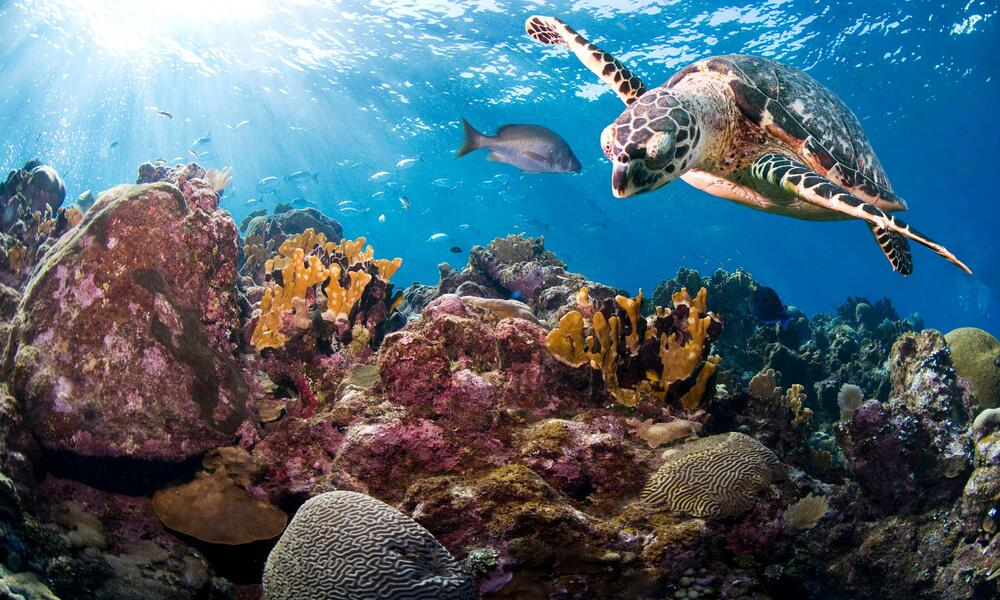

Sri Lankan Turtle Population
Today there are 250 species of turtles on earth. Seven of these live in the ocean and are called sea turtles. The remaining 243 species live on land or in freshwater ponds and marshes. The terrestrial turtles, those that live solely on land, are called tortoises. Sri Lanka is known for its diverse wildlife, including its sea turtles.
The Sri Lankan turtle population is a significant part of the country's wildlife. Sri Lanka is home to five species of turtles, namely,
- The Hawksbill turtle
- Green turtle
- Olive Ridley turtle
- Loggerhead turtle
- Leatherback turtle
These turtles are known for their distinctive characteristics and are commonly sighted along the country's coastline. The Sri Lankan government has implemented measures to conserve these turtles by protecting their nesting sites and implementing regulations to prevent illegal trade or hunting. Moreover, the Sri Lankan turtle population has become a popular attraction for tourists who can witness the turtles' nesting and hatching processes. Efforts are being made to protect Sri Lanka's turtle population, including the implementation of turtle conservation projects, the establishment of marine protected areas, and the enforcement of laws against poaching. These conservation efforts have shown some success, with some turtle populations stabilizing or even increasing in recent years. However, continued efforts will be needed in order to ensure the long-term survival of these important and beloved creatures.
What do they look like?

The Turtle Shell
The shells of the turtles and tortoises differ. All turtles have either a round, smooth or spiny shell. Each shell has a top, called a Carparace, and a bottom, called a Plas-tron. The shell is made up of large, hard scales called Scutes.The Carapace or top part of the shell of the turtles is streamlined and short making swimming easy. The shell is a distinct feature that separates water turtles from land turtles. Land turtle shells have a higher peak, rounded design and in some cases spines for defense. The only exception is the snapping turtle. Snapping turtles occupy land and water environments and act as ambush predators.

Flippers of a Turtle
These turtles have adapted feet for swimming. These are called Forelimbs. Forelimbs are long and padded-like. Long digits are fused throughout the flipper. Only one or two claws are present on each fore flipper. Turtles in marine and full-time aquatic environments have long legs with flipper paddles that transition into feet. Part-time aquatics have shorter legs but maintain webbed feet for swimming. Land-based turtles have little webbing and longer toes for digging and foraging. These flippers facilitate swimming greatly but make it very difficult for females to move on the beaches where they come back to nest.
Fun Facts about Turtles
- Turtles belong to one of the oldest reptile groups in the world - beating snakes, crocodiles and alligators!
- These creatures date back to the time of the dinosaurs, over 200 million years ago - woah!
- Turtles are easily recognised by their bony, cartilaginous shell. This super-tough casing acts like a shield to protect them from predators - some turtles can even tuck their head up inside their shell for extra protection!
- Just like your bones, a turtle's shell is actually part of its skeleton. It's made up of over 50 bones which include the turtle's rib cage and spine.
- Contrary to popular belief, a turtle cannot come out of its shell. The turtle's shell grows with them, so it's impossible for them to grow too big for it!
- What a turtle eats depends on the environment it lives in. Land-dwelling turtles will munch on beetles, fruit and grass, whereas sea dwellers will gobble everything from algae to squid and jellyfish.
- Some turtles are carnivores(meat eaters), others are herbivores \(plant eaters) and some are omnivores(a mixture of the two!). Many baby turtles start life as carnivores but grow to eat more plants as they mature.
- Turtles are 'amniotes' - they breathe air and lay their eggs on land, although many species live in or around water.
Why They Matter
Turtles are important for a multitude of reasons, making their protection critical. For starters, turtles serve an important role in preserving environmental equilibrium. They help to regulate populations in their respective ecosystems as predators and prey. Turtles contribute to the overall health and diversity of ecosystems by managing the populations of insects, mollusks, and tiny fish. Their existence or absence can also act as an indicator of environmental health, making them useful in monitoring ecosystem health and spotting potential hazards.
Other than that, turtles have cultural and traditional significance around the world. They are regarded in many cultures as symbols of wisdom, longevity, and resilience. Turtles are major cultural icons in folklore, mythology, and spiritual beliefs. Turtle conservation is important not just for maintaining ecological equilibrium, but also for recognizing and safeguarding cultural legacy. By safeguarding turtles, we assure the maintenance of these cultural linkages and the preservation of traditions linked with these wonderful creatures.